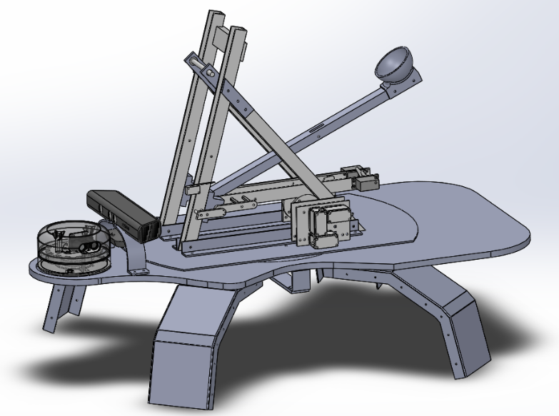
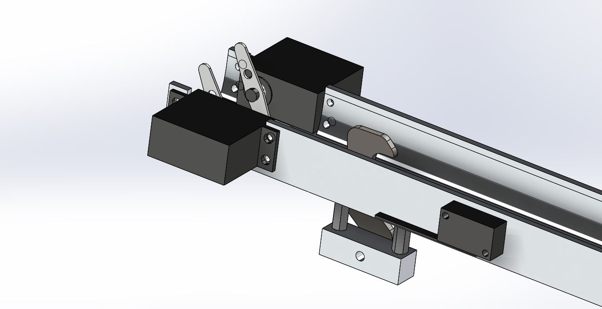
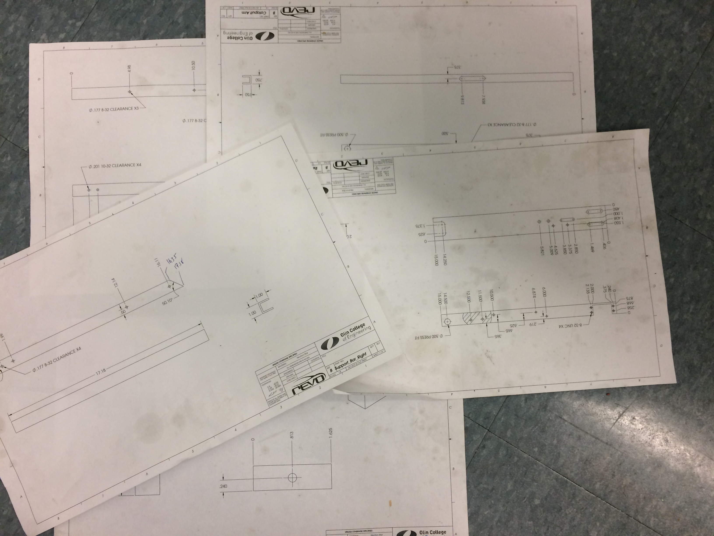

Mechanical
View all of our CAD here
Design
To achieve our goal of hitting targets accurately from far distances, we aimed for a reliable mechanical system. We settled on a catapult because it was something we knew would be accurate and would be robust once we got it working. As seen in the images below, we would always write and sketch our mechanical ideas on a whiteboard as a team. By proceeding to create mechanical drawings, we ensured that we didn’t run into issues with CAD and reduced miscommunication about the mechanical system.
CAD
We visualized our ideation with CAD to ensure that all of our components properly assembled together and that our intended geometry would provide the furthest launch distance possible. CAD also enabled us to produce accurate engineering drawings for fabrication.
Winch
The gearbox is made of two laser cut plates, sandwiching in VEX gears. 3 VEX 393 motors powers 12 tooth gears, which gets reduced to 36 tooth gears. This gives us a 3:1 torque advantage.
The winch is an assembly which spools wire around the pulley. This is able to withstand the force of the catapult’s surgical tubing.
Retracting Arm and Hook
The Retracting arm is what allows our catapult to have variable power. The retracting arm pulls back the main arm with the power of the winch. When the arm is in the proper position, two servos pulls back the hook releasing the main arm.
Fabrication
Our catapult required high tolerancing for fitting together multiple pieces of the catapult. We tried to limited complexity of our components to allow for CNC operations, reducing the time spent on machining. Overall, we spent around 48 man-hours in the shop creating our parts.
